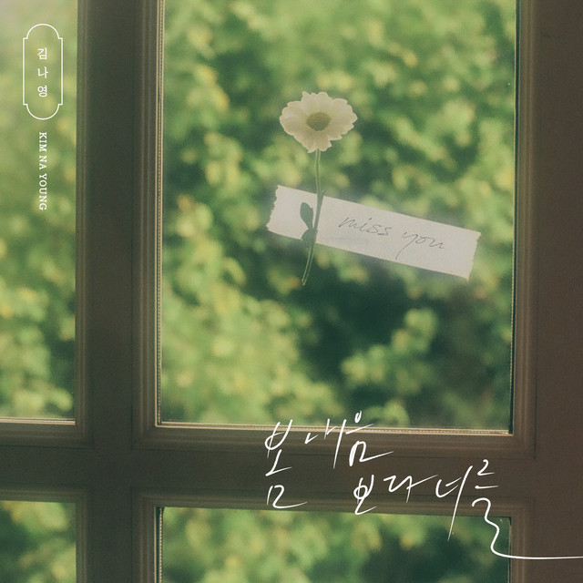

안녕하세요 라보엠입니다.
봄이 오면 우리 마음속에 피어나는 그리움이 있습니다. 김나영의 '봄 내음보다 너를'은 그 섬세한 감정을 아름답게 표현한 노래입니다. 2021년 4월 14일에 발매된 이 곡은, 봄의 향기보다 더 그리운 '너'에 대한 감정을 담아낸 미디엄 템포의 발라드입니다. 이 노래는 김나영이 직접 작사에 참여하여 진솔한 감정을 담아냈습니다. 봄이 되면 찾아오는 특별한 그리움에서 영감을 받아 만들어진 이 곡은, 많은 사람들이 공감할 수 있는 보편적인 감정을 노래합니다.

김나영 봄 내음보다 너를 MV
'봄 내음보다 너를'의 뮤직비디오는 노래의 감성을 시각적으로 잘 표현하고 있습니다. 김나영이 직접 출연한 이 영상은 오래된 동네를 배경으로 지나간 기억을 추억하는 모습을 담아냅니다. 특히 벚꽃이 흩날리는 장면과 함께 펼쳐지는 스토리텔링은 노래의 가사와 어우러져 깊은 인상을 남깁니다.
이 곡의 가장 큰 매력은 김나영의 감성적인 보컬과 적재의 어쿠스틱 기타 연주의 조화입니다. 김나영의 호소력 있는 목소리는 노래의 감정선을 풍부하게 만들어주며, 적재의 감각적인 기타 선율은 애틋한 추억의 감정을 섬세하게 표현합니다. 중반부의 간주에서는 레트로한 피아노와 몽환적인 사운드가 더해져 감성을 한층 더 충만하게 만듭니다. 이러한 음악적 요소들이 어우러져 따뜻한 봄 하늘 아래에서 추억에 잠길 수 있는 분위기를 만들어냅니다.
김나영 봄 내음보다 너를 가사
너의 이름을 부르면
뒤돌아 꼭 안아주던
따뜻했던 너의 향기
어떤 봄 내음보다 여운이 길었던 너였어
아직 너를 너를 그리워해
여전히 넌 내 맘 깊은 곳에
너와 걷던 길목을 지나갈 때면
나는 고개를 떨구곤 해
비 오던 그 어느 날도
나보다 먼저 서있던
오래 기다렸다고 날 다그치지도
오히려 날 안아줬던 너
아직 너를 너를 그리워해
여전히 넌 내 맘 깊은 곳에
너와 걷던 길목을 지나갈 때면
나는 고개를 떨구곤 해
나의 모든 날에 넌 자연스럽게
처음부터 그 자리에 있던 것처럼
오래오래 간직할 거야
우리 함께했던 날 전부
우리 다시 다시 만나는 날
그땐 내가 먼저 달려갈게
표현하지 못했던 온 맘을 담아
너를 더 사랑할게 너를
'봄 내음보다 너를'의 가사는 시적인 표현으로 가득합니다. 특히 "봄 내음보다 너를 더 맡고 싶어", "겨울 지나 봄이 와도 내 맘엔 여전히 너의 계절"과 같은 구절은 계절의 변화와 변하지 않는 마음을 대비시키며 깊은 감정을 전달합니다. 가사 전체를 관통하는 주제는 '그리움'입니다. 꽃잎이 날리는 거리를 걸으며 떠오르는 추억, 함께 걸었던 길에서 들리는 듯한 웃음소리 등 소소한 일상의 순간들이 그리움을 더욱 짙게 만듭니다.
김나영의 음악 세계
'봄 내음보다 너를'은 김나영의 음악적 성장을 보여주는 작품으로 평가받고 있습니다. 2009년 Mnet '슈퍼스타K' 시즌1 준우승을 시작으로 '이별고수', '같은 시간 속의 너' 등 감성적인 발라드로 사랑받아온 그녀의 음악 세계에서 이 곡은 한층 더 성숙해진 감성과 음악적 깊이를 보여줍니다.
맺음말
김나영의 '봄 내음보다 너를'은 단순한 사랑 노래를 넘어 우리 모두의 마음속에 있는 그리움을 노래합니다. 봄이 올 때마다 떠오르는 특별한 누군가, 혹은 지나간 시간에 대한 아련한 추억을 떠올리게 하는 이 노래는, 계절이 바뀌어도 여전히 우리 마음속에 특별한 자리를 차지하고 있습니다. 봄날의 따스한 햇살처럼 김나영의 감성적인 목소리가 우리의 마음을 어루만지는 '봄 내음보다 너를'. 이 노래와 함께 여러분만의 특별한 봄날의 추억을 만들어보는 것은 어떨까요?